2.1 Disease
What is disease?
Disease impacts every single living organism. People talk about it, newspapers report on it, parliaments legislate about it, doctors and vets fight it and insurance companies cover it. Disease looms large in human consciousness.
Diseases are either non-infectious or infectious.
Non-infectious (noncommunicable) disease
Non-infectious diseases, or noncommunicable diseases (NCDs), are not caused by a pathogen. They include:
- genetic disorders (albinism, PKU, autoimmune diseases)
- social diseases (lack of nutrition, obesity causing heart disease, diseases resulting from smoking, drug abuse, alcohol)
- cancer
- mental diseases (bipolar disorder, schizophrenia)
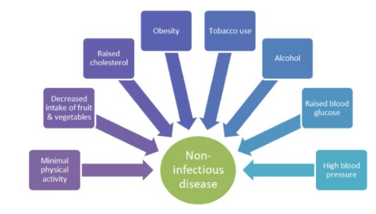
NCDs share five major risk factors: tobacco use, physical inactivity, the harmful use of alcohol, unhealthy diets and air pollution. NCDs cause more deaths than infectious diseases, and their health and economic costs make preventing them a major priority for the 21st century.
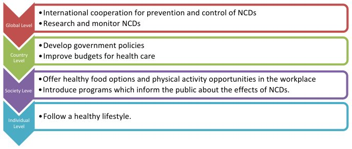
| Level | Prevention |
|---|---|
| Global | International cooperation for prevention and control of NCDs; research and monitoring |
| Country | Develop government policies; improve health-care budgets |
| Society | Healthy food and physical activity at work; public programs about the effects of NCDs |
| Individual | Follow a healthy lifestyle |
Infectious disease
Infectious diseases are passed from one organism to another by direct contact (touching skin or sneezing on someone) or indirect contact (touching benches covered in pathogenic bacteria). They result from:
- Micro-organisms like bacteria (e.g. Salmonella poisoning), protista (e.g. malaria) or fungi (e.g. tinea)
- Macro-organisms like worms (e.g. tapeworms or leeches) or insects (e.g. lice or ticks)
- Pathogenic agents that are not organisms, like viruses (e.g. HIV or the common cold) and prions (e.g. mad cow disease or kuru)
Which of these is an infectious disease?
Influenza is caused by a virus and spreads from person to person. The others are genetic, social or other non-infectious diseases.
Prions are pathogenic agents (abnormal proteins), not organisms. Virulence is the ability of a pathogen to cause damage in the host.
Test your understanding (page 10)
- Write down two features that all infectious diseases have in common.
- Non-infectious diseases are a wide-ranging attack on the body. Identify one feature common to all non-infectious diseases.
- They are caused by pathogenic agents, and they can be passed from one individual to another by direct or indirect contact.
- All non-infectious diseases impair the normal functioning of the body in some way (without being caused by a pathogen).
Write a definition for: a. disease; b. infectious disease; c. non-infectious disease.
- Disease: any condition that impairs the normal functioning of an organism.
- Infectious disease: a disease spread from one organism to another by direct or indirect contact (caused by a pathogen).
- Non-infectious disease: a disease that is not caused by an infectious agent.
Some infectious diseases are curable while others remain incurable.
- Name a curable infectious disease and briefly describe the nature of its cure.
- Name an infectious disease for which there is no cure at the moment.
- Example: influenza, treated with antiviral medication (or a bacterial infection such as strep throat, cured with antibiotics).
- Example: HIV/AIDS is incurable, although there are treatments to manage the symptoms.
Which types of disease are the biggest killers in: a. Australia? b. underdeveloped countries in Africa and South-East Asia? c. Suggest a reason for the difference.
- Coronary heart disease (a non-infectious disease).
- Africa: HIV/AIDS; South-East Asia: cardiovascular disease.
- Africa has fewer resources to prevent and treat diseases like AIDS than wealthy countries like Australia. Australians can afford a lifestyle more likely to lead to coronary heart disease, e.g. poor diet, lack of exercise, alcohol.
Case studies: chickenpox and type I diabetes
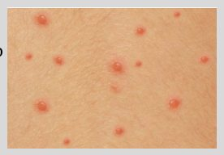
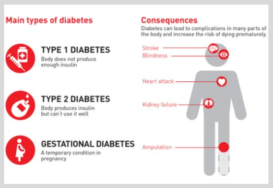
- The non-infectious disease is , because it is caused by .
- The infectious disease is , because it is caused by .
- List the symptoms of chickenpox and type I diabetes.
- What would be a possible treatment for type I diabetes? What is the prognosis for a sufferer?
- Chickenpox: itchy rash with small, fluid-filled blisters. Type I diabetes: high blood glucose; excessive urination, thirst, weight loss, lethargy. It can lead to stroke, heart attack, kidney failure and amputation.
- Monitoring blood glucose and injections of insulin. If treated, the prognosis is a long, healthy life.
2.2 Types of Pathogens
Pathogens are disease-causing organisms or infectious agents. There are 6 main types:
- Bacteria
- Protozoa
- Fungi
- Worms
- Viruses
- Prions
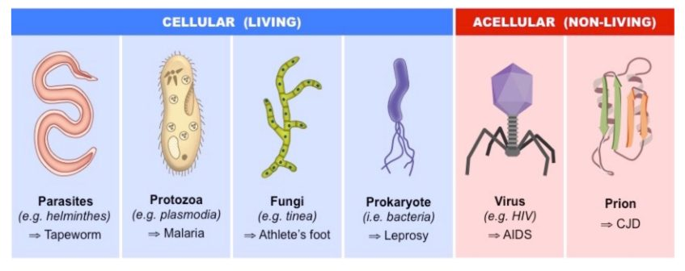
1. Bacteria
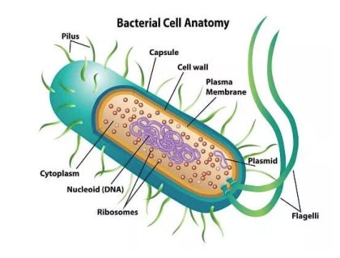
Physical characteristics:
- Prokaryotic cell structure: a cell wall, one circular chromosome (nucleoid), plasmids, ribosomes and no membrane-bound organelles; may have a flagellum and a slimy capsule.
- Characterised and identified by their:
- Shape: round (coccus), rod-shaped (bacillus) or spiralled (spirochaete)
- Gram stain: Gram-negative bacteria stain pink; Gram-positive bacteria stain purple
- Plating: the colour of their colonies growing on agar plates
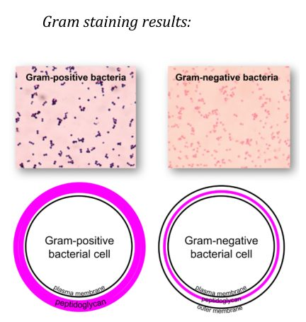
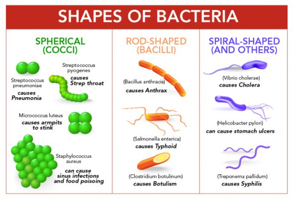
Transmission: water droplets; direct or indirect contact; contaminated food or water; vectors.
Reproduction: all bacteria reproduce by binary fission.
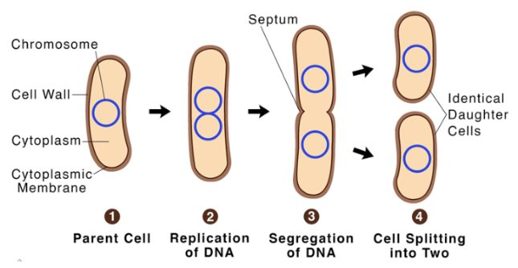
Effects on host: release enzymes or toxins which impair the normal functioning of the organism.
Treatment: antibiotics, prescribed by doctors, target prokaryotic cells and disrupt their metabolism, killing them.
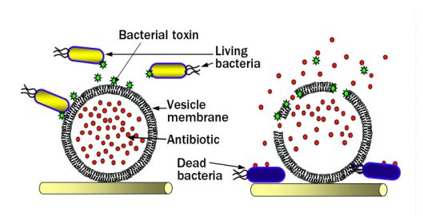
Examples: botulism, typhoid, meningococcal disease.
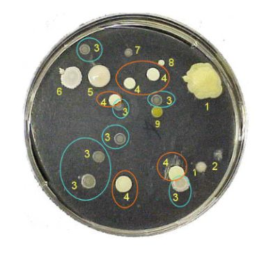
A bacterium stains purple in a Gram stain. It is:
Practical Activity 1: Micro-organisms and streak plating
#### Part A: Where do you find micro-organisms?
Materials: 2 agar plates, sterile swabs, sticky tape, marker pens, milk; 6 agar control plates (teacher only).
Method: expose the agar surface of nutrient agar plates in different settings, then incubate overnight at 35.5 °C and examine the growth after 24 hours.
- Infect your dish in one of these ways: lightly touch the agar to a doorknob; touch it with fingers and thumbs; swab a toilet seat; sprinkle on dust from the floor; place a strand of hair on it; run a few drops of milk over it; cough or breathe over it; spread scrapings from around your teeth near the gums; sprinkle scrapings from under your fingernails.
- Repeat with the second plate, using a different setting.
- Label all plates around the edge of the base with the method/location. Do not write on the lid.
- Seal all plates around the edges with tape, leaving the lid clear.
- Incubate all plates overnight at 35.5 °C.
- At the end, place all plates in containers for sterilisation. Do not open the plates after sealing.
- Your teacher will prepare control plates for comparison.
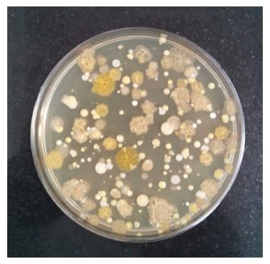
Results: count the colonies on your plate and note the different kinds; examine the control plate; draw one of your plates showing the location and shapes of the flora.
- Why is the temperature of 35.5 °C chosen for this experiment?
- Why was it important to include control plates in the experiment?
- It is the optimum temperature for the growth of bacteria (close to body temperature).
- As a basis of comparison: to show that any growth of micro-organisms came from the sample taken and was not already in the agar plate.
- Were any of your colonies fungal colonies? How can you tell?
- In general, does your data support the hypothesis that bacteria are found everywhere?
- Fungal colonies are generally larger and have a fuzzy, powdery appearance; bacterial colonies look like small oily spots.
- It should: no matter where the sample was taken from, there should be some bacterial colonies growing.
- Given the numbers of micro-organisms and how fast they reproduce, why are there far fewer serious illnesses and deaths from infection than many years ago? Name four factors.
- Explain how refrigeration and freezing reduce the spoiling of food by micro-organisms.
- Why is it important to maintain sterile conditions in an operating room?
- Use of disinfectants on surfaces; use of sanitisers; more hand washing; improvements in health care and treatment of disease (e.g. antibiotics, vaccines).
- Lower temperatures slow down or stop the growth of micro-organisms, reducing the rate of spoilage.
- Surgery cuts through the protective first line of defence (the skin), so conditions must be as sterile as possible to stop micro-organisms getting into the wound and causing infection.
#### Part B: Streak plating to identify bacteria
Materials: 2 agar plates, bacteria culture, inoculating loop, Bunsen burner, heatproof mat, sticky tape, marker pen, matches, disposable gloves.
Method:
- Sterilise an inoculating loop by holding it at an angle in a Bunsen burner flame until the entire loop turns orange. Don't let it touch any surface; allow it to cool.
- Open the Eppendorf tube of E. coli and dip the loop into the culture broth.
- Raise the lid of the Petri dish, rest the loop on the agar and gently draw four lines across it, keeping the loop horizontal. Don't dig into the agar. Replace the lid.
- Sterilise the loop again and cool.
- Turn the plate 90°, lift the lid and streak 4 lines from the ends of the first lines.
- Sterilise, cool, rotate 90° and spread bacteria from the second streak into a third area.
- Sterilise, cool, rotate 90° and streak from the third area into a fourth, in straight lines or a zigzag.
- Replace the lid, invert the plate, seal it with tape, label it and incubate overnight at 35.5 °C.
- Spray the desk with ethanol, wipe it and wash your hands.
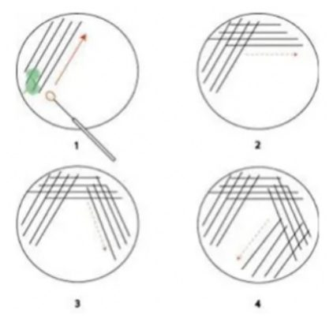
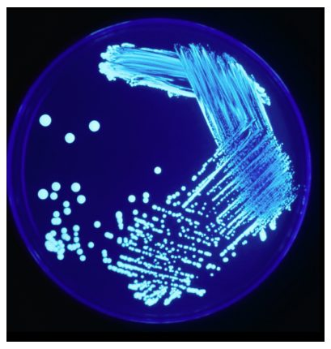
You should see bacteria growing in streaks and as isolated colonies: each isolated colony grew from a single cell, so it is a pure culture of one type of bacteria.
- Why should the loop be flamed before being put into the broth?
- Why should the loop be flamed after inoculating the plates?
- To make sure the loop is sterile, so only bacteria from the broth are transferred to the plate.
- To kill the bacteria left on the loop, so it does not contaminate anyone or anything else.
- Why are the Petri dishes sealed?
- Why invert the Petri dish before putting it in the incubator?
- So that no contamination or infection can escape from the dish after incubation (and nothing gets in).
- Condensation forms in the incubator. If it formed on the lid, it would drip onto the agar where bacteria are growing.
Some students saw fungal growth or other contaminants in their dishes. Suggest three possible errors in the method.
Any three: taking the lid off completely while streaking, so fungal spores fell from the air onto the plate; not working close to the Bunsen flame (rising hot air carries spores away); the loop was not properly sterilised at the start; the E. coli broth was contaminated with fungal spores.
Test your understanding: bacteria (page 18)
- Bacteria are prokaryotic cells. What does this mean?
- a. Outline binary fission. b. List three conditions in the human body that suit bacterial reproduction.
- Bacteria are very simple cells with no membrane-bound organelles and no true nucleus.
- a. The circular chromosome is replicated; the cell grows/elongates and the chromosomes move apart; the cell divides its cytoplasm and cell wall, forming 2 identical cells.
- A warm environment; a moist environment; a plentiful supply of nutrients and space.
- How do pathogenic bacteria cause disease?
- Outline three ways that bacteria can be identified.
- Bacteria produce enzymes or toxins (by-products) which impair the normal functioning of cells, causing disease.
- Shape (cocci, rod-shaped or spiral); Gram stain (positive: purple; negative: pink); plating (the colour of the colonies on agar plates).
- List three preventative measures that individuals and health authorities could use to avoid bacterial infection.
- Bacteria have colonised every environment on Earth, from geothermal to polar, during their 3500 million years. What does this suggest about their ability to colonise the human body?
- Using PPE like gloves and masks; using sanitisers, disinfectants on surfaces and antiseptics; heating or boiling food and water to sterilise it.
- Bacteria are very adaptable. The human body is a perfect environment for them: warm, with plenty of food and space.
2. Protozoa
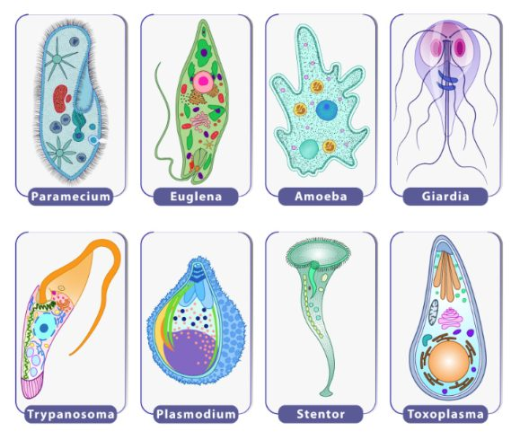
Physical characteristics:
- Eukaryotic (Protista): membrane-bound organelles including a nucleus
- Unicellular, aquatic organisms
- Many have structures that make them motile, e.g. flagella
Transmission: contact with contaminated water, or via a vector (another organism that transmits the pathogen between individuals), e.g. the Anopheles mosquito for malaria.
Reproduction: both asexual and sexual. Asexual reproduction is usually binary fission. Most protozoans have very complex life cycles that pass through several different stages and can involve several hosts.
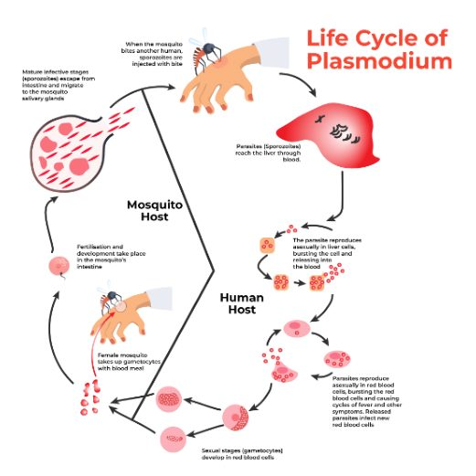
Effects on host: a range of diseases caused by toxins and enzymes.
Treatment: drugs (e.g. anti-malarials).
Examples: malaria (Plasmodium), sleeping sickness (Trypanosoma), Giardia.
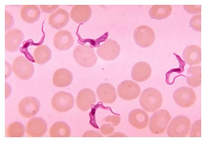
3. Fungi
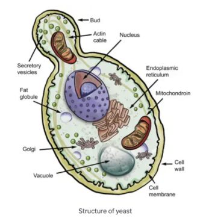
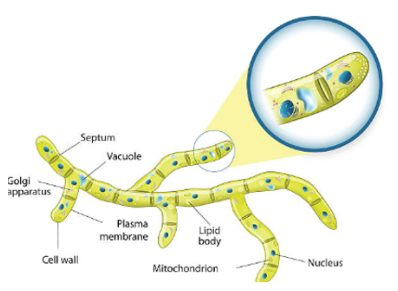
Physical characteristics:
- Eukaryotic cells; microscopic or macroscopic
- Cell walls made of chitin
- Spread threads called hyphae, which release enzymes onto their food and absorb the nutrients
Metabolic requirements: all are heterotrophic, usually getting nutrients from dead organic matter.
Transmission: contact with spores.
Reproduction: sexual and asexual. Some reproduce asexually by binary fission or budding (as in yeast). Sexual reproduction is via fruiting bodies that produce spores.
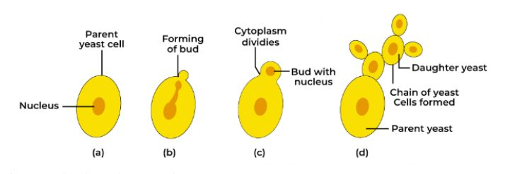
Effects on host: superficial disease that degrades the surface (skin, nails, mucous membranes).
Treatment: fungicides.
Examples: thrush, athlete's foot (tinea), ringworm.
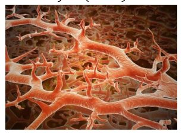
4. Worms
Physical characteristics: eukaryotic, macroscopic, segmented or unsegmented bodies; many have hooks.
Metabolic requirements: all are heterotrophic.
Transmission: ingestion of eggs; vectors in some cases.
Reproduction: sexual; some worms are hermaphrodites; most go through a complicated life cycle.
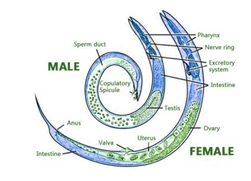
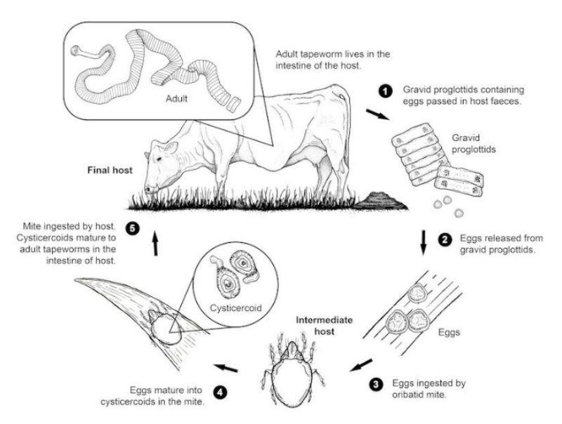
Effects on host: generally not fatal unless infestations block blood vessels.
Treatment: worming tablets or surgery.
Examples: liver fluke, Loa loa (eye worm), pinworm, tapeworm.
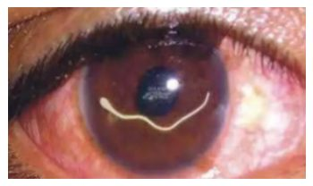
Data analysis task: worm life cycles
#### Part A: the human blood fluke (Schistosoma)
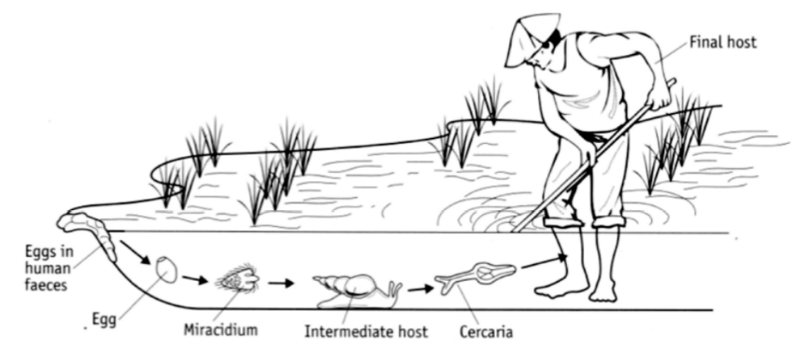
Adult blood flukes attach to the walls of intestinal blood vessels and feed on blood. The vessels can rupture, releasing fluke eggs into the intestine, and the microscopic eggs leave the host in the faeces. Schistosomiasis causes body pains, severe dysentery and anaemia. Victims are gradually weakened, and many eventually die of exhaustion or other diseases.
- Suggest a possible role of the intermediate host (a water snail) in the blood fluke life cycle.
- The cercaria larva burrows through the skin of the final host to the intestinal blood vessels. List three chemicals in the intestinal blood that might nourish the adult fluke.
- The fluke develops inside the snail from the miracidium stage to the cercaria stage, which can then infect the final host (humans).
- Any three: glucose, amino acids, plasma proteins, lipids.
- Research the meaning of dysentery and anaemia.
- Suggest three prevention and control measures for schistosomiasis.
- Dysentery: disease of the gastrointestinal tract causing bloody diarrhoea (caused by bacteria or parasites). Anaemia: a lack of red blood cells or haemoglobin.
- Protective foot and leg covers so cercariae can't burrow through the skin; prevent contamination of water (e.g. rice paddies) by human faeces; kill the snails (intermediate host) so the larvae can't develop.
#### Part B: the Chinese liver fluke (Clonorchis sinensis)
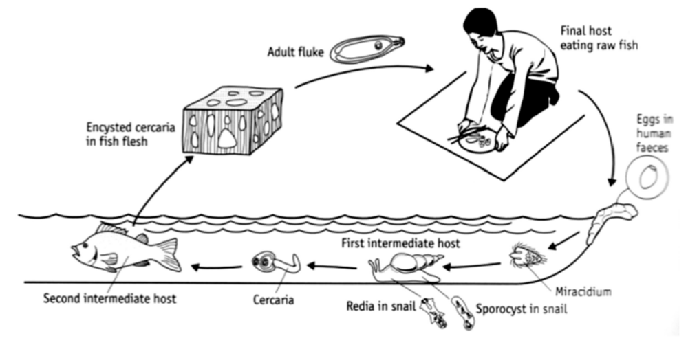
The Chinese liver fluke lives in the bile ducts of the human liver, attaching by suckers and feeding on blood. A colony causes serious anaemia and liver disease by blocking the bile ducts.
The intermediate hosts are ; the final host is .
- How does eating raw fish contribute to this disease?
- In parts of southern China, 75 to 100% of the population are infected. List four prevention and control measures.
- Not cooking the fish means the cercariae in the raw flesh are not killed, so the chance of infection increases. Cooking the fish would reduce the disease.
- Cook fish rather than eating it raw; don't eat fish from contaminated regions; prevent human sewage contaminating the water where fish are caught; control the snails so there is no first intermediate host.
5. Viruses
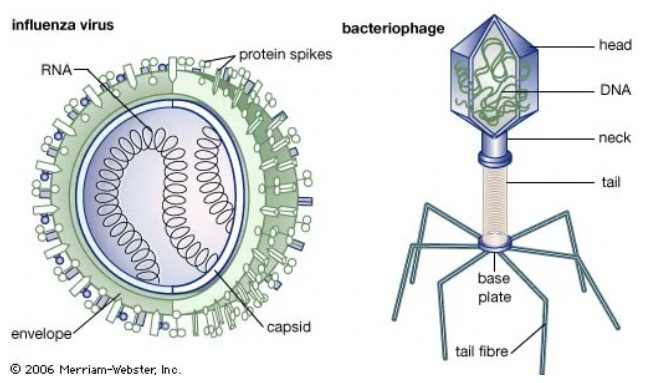
Physical characteristics: acellular, not considered living. A protein coat surrounding nucleic acid (DNA or RNA).
Transmission: coughing or sneezing; direct contact with bodily fluids; indirectly from surfaces.
Reproduction: harnesses the host cell's metabolism to make more copies of itself.
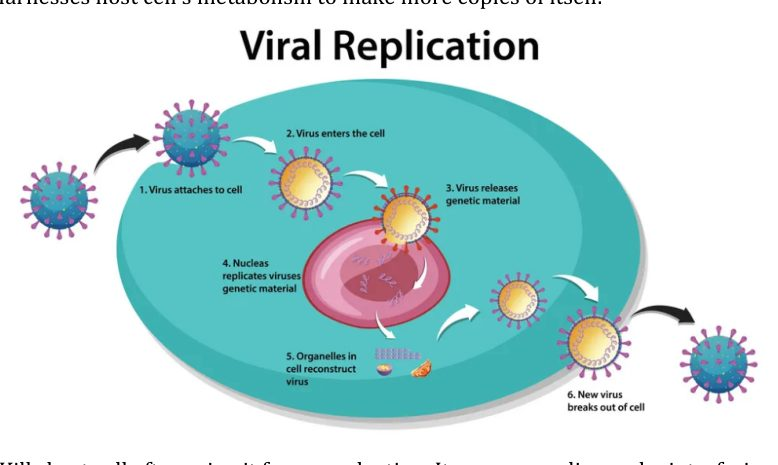
Effects on host: kills the host cell after using it to reproduce; may cause disease by interfering with normal cell processes.
Treatment: antiviral drugs try to interrupt the virus's life cycle.
Examples: HIV, herpes, influenza.
6. Prions
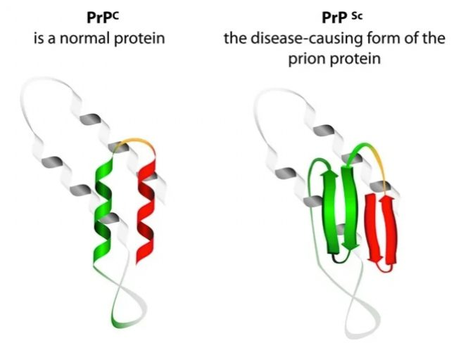
Physical characteristics: acellular; abnormal proteins.
Transmission: eating contaminated nervous tissue.
Reproduction: when a prion meets a normal protein, it changes it into the prion form.
Effects on host: causes the carrier cell to burst; causes tissue destruction.
Treatment: unknown.
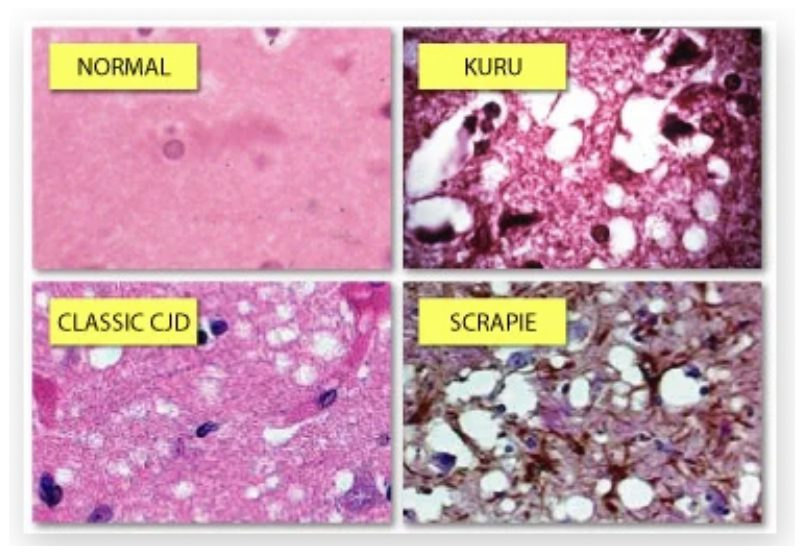
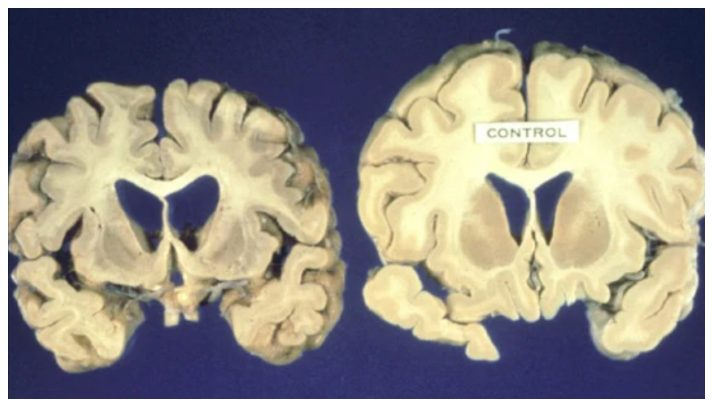
Examples: kuru, Creutzfeldt-Jakob disease (CJD), scrapie in sheep.
Video: Body Snatchers: Parasites and Worms (ClickView)
- How much blood can leeches suck per feed?
- How do leeches suck blood without their hosts noticing?
- How did the leech get into the hiker's nose and why was it appealing?
- In what form is the beef tapeworm when Mike the biologist swallows it?
- How many people around the world are invaded by worms?
- How will Mike first notice he has a tapeworm?
- How does the worm stay on the gut wall?
- What does the tapeworm feed on and how does it absorb nutrients?
- How did the bot fly maggot get into Tanya's scalp?
- How did the doctor get rid of the bot fly larva?
- Up to 3 times their body weight per feed.
- They inject an anaesthetic so the host doesn't feel it.
- He drank from a mountain stream; the leech was looking for a warm, safe place with plenty of food.
- A cyst containing the larval tapeworm (swallowed with a glass of wine).
- About 1.4 billion people.
- White segments appear in his faeces and come out of the anus.
- A ring of suckers attaches to the intestinal wall.
- Digested food in the gut, absorbed through its body surface.
- A mosquito delivered an egg to her scalp; it hatched and burrowed in.
- A dressing over the maggot's air hole suffocated it.
- How does the Brazilian candiru get into the body, what attracts it, and why is it hard to remove?
- Where do pinworms live? How many infants have them?
- How do pinworms get into our bodies?
- Where does Ali get his Ascaris eggs?
- After hatching, Ascaris worms chew into the bloodstream. Where do they go next?
- How do the eggs leave the body and how do the worms affect their host?
- What else could reduce the spread of worms in this community?
- How did the protist parasite enter Nick's eye?
- What happened to his eye? Will he see again from it?
- What were Marian's initial symptoms?
- Up the urethra, attracted by urea in urine; it anchors with barbs.
- In the rectum (coming out at night for oxygen); over half of all infants.
- Scratching and not washing hands; eggs on clothing can also be breathed in.
- Playing in dirt containing eggs from faeces; he breathes them in or picks them up by touch.
- To the lungs, where they are coughed up and swallowed, ending up in the intestines.
- Eggs leave in the faeces. The worms compete with the host for digested nutrients, harming the host's health.
- Hand washing, proper sewage treatment and worming tablets.
- Through a scratch on the cornea (after washing his contact lens in tap water).
- The parasites destroyed his cornea; no prospect of sight returning.
- Her right foot was swollen.
- What type of parasite caused Marian's symptoms and what is the disease called?
- How many people are affected by these worms?
- How did the worm eggs get into her body?
- Is there a cure for elephantiasis?
- How did the American Jewish patients get pork tapeworm?
- What measures should be used when handling and cooking food?
- After leaving a human, what happens to the tapeworm's eggs and cysts?
- How do they re-enter the human food chain?
- How long is Mike's tapeworm?
- Tiny filarial worms block the lymph ducts, causing elephantiasis.
- About 200 million people.
- A mosquito vector injected the baby worms into her bloodstream when it bit her.
- No cure, although there is hope for a new drug treatment.
- Their housekeepers were infected and didn't wash their hands after the toilet; preparing food passed the cysts on.
- Wash hands before preparing food; disinfect surfaces; cook meat thoroughly.
- The segments containing eggs and cysts stay alive, move onto grass and can last a long time; cows eat them and they hatch and burrow into the cow's tissue.
- When steak is not cooked properly, the cysts remain alive and infect the person.
- About 3 m long!
Practical Activity 2: Investigating pathogens
Many organisms cause disease in their host; the type and extent of damage depends on the pathogen. This activity looks at protozoans and multicellular internal parasites. Before a parasite can cause disease, infection must occur, sometimes via vectors. Inside the host, an internal parasite must have adaptations to protect itself from the host's defences, to secure itself, and to produce offspring.
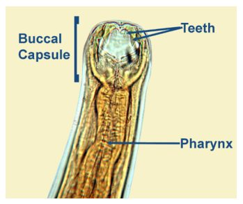
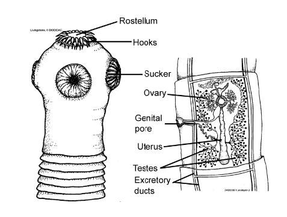
- Describe the adaptations that stop the parasites being easily removed from the host.
- Describe how they gain nutrients and dispose of wastes.
- Describe the harmful effects the parasite has on the host.
- Suggest ways people could reduce the rate of infection.
- Hooks, suckers and teeth to attach to tissue surfaces.
- They take in and digest food through a simple digestive system, or absorb nutrients directly through their surface. Wastes usually leave through the mouth (many flukes have no anus); protozoans excrete wastes by exocytosis in vacuoles.
- Most affect the intestinal tract, causing nausea, vomiting, weight loss and abdominal pain.
- Eat well-cooked food, drink boiled water, and wash hands carefully after going to the toilet.
- Would a well-adapted parasite kill its host? Explain.
- What features are common to the multicellular parasites studied?
- What reproductive adaptations help internal parasites overcome their isolated lifestyle?
- Explain why adult parasites have poorly developed sense organs such as eyes.
- No: if the host died, the parasite would die too. It is in the parasite's interest not to kill its host.
- A large SA:V ratio, simple digestive systems, and ways of attaching to the intestine to avoid removal.
- Most are hermaphrodites, so they can reproduce without finding a partner.
- They live inside their hosts where there is no light, so eyes are not needed.
Test your understanding: pathogens (page 31)
Summarise the main characteristics of each type of pathogen: physical characteristics, effects on host, mode of reproduction and examples.
Bacteria: prokaryotic, unicellular; identified by shape, stain and colony colour; release enzymes and toxins; binary fission; e.g. botulism, typhoid, meningococcal.
Protozoa: eukaryotic, unicellular; spread by contaminated water and vectors; toxins and enzymes; asexual (binary fission) and sexual with complex life cycles; e.g. malaria, sleeping sickness, Giardia.
Fungi: eukaryotic, chitin cell walls, hyphae; break down external surfaces; sexual and asexual (binary fission or budding); e.g. thrush, tinea, ringworm.
Worms: eukaryotic, macroscopic, segmented or unsegmented, may have hooks; absorb host nutrients, can block vessels but usually not fatal; sexual, some hermaphrodites, complex life cycles; e.g. Loa loa, pinworm, liver fluke, tapeworm.
Viruses: acellular, protein coat and DNA or RNA; kill the host cell after it makes many copies; use the host cell's metabolism; e.g. HIV, herpes, influenza.
Prions: acellular abnormal proteins; destroy cells and tissue; convert normal proteins to the prion form; e.g. kuru, CJD, scrapie.
What type of pathogenic agent causes Lassa fever?
The agent inhabits white blood cells and turns them into factories that manufacture more of it. Only viruses reproduce this way.
- The rat acts as a vector. What is a vector?
- What does endemic mean?
- List the symptoms of the disease.
- Is this disease infectious? Is it virulent?
- A vector transmits a pathogen from one organism to another, usually an animal or insect.
- A disease normally present in a particular area, usually with low levels of spread.
- Slight fever, malaise and weakness, headache; then haemorrhaging in gums, eyes and nose, respiratory distress, vomiting, facial swelling, and pain in the chest, back and abdomen; it can cause hearing loss, tremors, encephalitis and death.
- Yes, infectious: it is easily transmitted from the rat to humans. Fairly virulent: 20% of infected people develop dangerous symptoms.
- Sleeping sickness is caused by a , because it is a .
- It have a vector: the .
Describe the symptoms of sleeping sickness.
First stage: fever, headaches, itchiness and joint pains. Second stage: confusion, poor coordination, numbness and trouble sleeping.